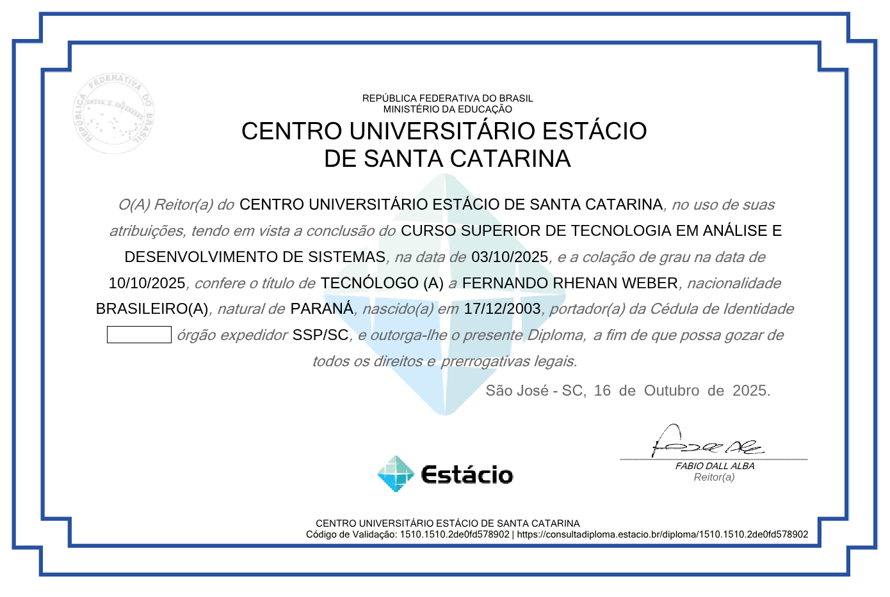
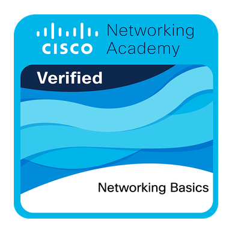

Desenvolvedor Web — Santa Catarina, Brasil
Tentando fazer da web um lugar melhor.
Atuo como desenvolvedor Backend e adoto a cultura DevOps.
Trabalho
-
Nandobot
Um projeto para afiliados de e-commerce, open source e rodando.
Sobre
Sou formado em Análise e Desenvolvimento de Sistemas desde 2025 pela Estácio. Desde lá venho empreendendo e fazendo projetos paralelos, constantemente evoluindo.
Gosto de desafios e não me contento em ficar na zona de conforto.
Trago versatilidade ao desenvolver e implantar. De fato acredito que um bom programador deve estar ciente de todas as etapas de uma entrega. Isso é essencial para o equilíbrio do sistema.
Stack
- Typescript / NodeJs
- React / NextJs
- Postgres
- Redis
- Docker
- Git
- Github Actions
Formação
-
Análise e Desenvolvimento de Sistemas
Estácio

Diploma universitário -
Curso de Redes - Básico
Cisco Networking Academy

Certificado
Contato
Venha conversar comigo, aqui estão meus contatos.
- Emailfernandorhenan9@gmail.com
- GitHubgithub.com/FernandoRhenan
- LinkedInFernando Weber